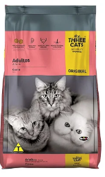
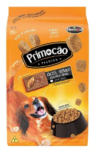
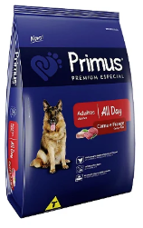
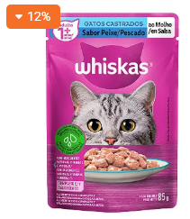

Na Petshop Little Cat, você encontra uma variedade de rações para cães e gatos,
com opções para diferentes portes, idades e necessidades.
Trabalhamos com marcas reconhecidas pela qualidade e nutrição, buscando sempre o melhor para a saúde e
o bem-estar do seu pet.
Contamos com opções como Golden, Premier Pet, GranPlus, Magnus, Pedigree, Whiskas,
Royal Canin, Fórmula Natural, Quatree e Special Dog, além de diferentes sabores e
formulações para filhotes, adultos e pets idosos.
Aqui, você encontra a ração ideal para manter seu melhor amigo saudável, forte e
feliz! 🐶🐱💜




Ração para gatosRação PrimocãoRação para cãesRação PrimusRação para gatosWhiskas sachê
R$ 19,90
R$ 25,90
R$ 19,90
R$ 30,90
R$ 15,90
R$ 11,90